The checks that keep code readable and docs true, for people and for agents: what each enforces, which setting tunes it, and how to fix what it finds.
Overview
Hygiene checks keep code within complexity bounds and documentation sized, routed and accurate enough for an AI context window.
Checks
Every hygiene check, generated from the CLI's registry by task contributing:tables:
| Check | Run it | Workflow | What it does |
|---|---|---|---|
hygiene:complexity | task ss:hygiene:complexity | ss-hygiene-complexity-check.yml | Code complexity analyzer (Lizard wrapper). |
hygiene:csp-exceptions | task ss:hygiene:csp-exceptions | ss-hygiene-csp-exceptions-check.yml | CSP-Exceptions Drift Detector. |
hygiene:docs-accuracy | task ss:hygiene:docs-accuracy | ss-hygiene-docs-accuracy-check.yml | Documentation accuracy validator. |
hygiene:docs-size | task ss:hygiene:docs-size | ss-hygiene-docs-size-check.yml | Documentation size monitor. |
hygiene:docs-structure | task ss:hygiene:docs-structure | ss-hygiene-docs-structure-check.yml | Documentation structure validator. Every doc must have an explicit route. |
hygiene:entry-files | task ss:hygiene:entry-files | ss-hygiene-entry-files-check.yml | Entry-file budget + AGENTS.md-first routing check. |
hygiene:openapi | task ss:hygiene:openapi | ss-hygiene-openapi-check.yml | OpenAPI spec drift audit (in-CLI implementation). |
hygiene:privacy | task ss:hygiene:privacy | ss-hygiene-privacy-check.yml | Privacy statement check. |
Code Complexity Analysis
Analyzes code complexity using Lizard to identify overly complex functions and modules. Helps identify refactoring opportunities and maintain code health.
task ss:hygiene:complexityThe check fails when any function's cyclomatic complexity (CCN) exceeds hygiene.complexity.max_ccn (default 15, which is Lizard's own warning line). The gate lives in the CLI, so task ss:hygiene:complexity returns the same pass/fail locally, in the pre-push hook and in CI. There is no separate CI-only threshold. To run stricter, set the knob in .slopstopper.yml:
hygiene:
complexity:
max_ccn: 10 # McCabe's classic "review" boundThe gate measures production code. Test files by the common conventions (tests/, test/, __tests__/, spec/, *_test.go, test_*.py, *.test.*, *.spec.*, *_spec.rb, *Test.java …) and everything .gitignore ignores (build output such as dist/) are skipped, so a local run after a build sees what CI sees. Committed generated or vendored code goes in hygiene.complexity.exclude (globs, added to the built-in set).
When a function trips the ceiling and is genuinely well-factored (e.g. a flat dispatch or validation table), prefer raising max_ccn with a note over contorting the code, but treat that as a deliberate, documented decision rather than a way to silence noise.
Excluding docs from the docs checks
hygiene.docs.exclude (repo-relative globs, default docs/archive/**) takes paths out of docs-size, docs-structure and docs-accuracy at once. Use it for content that lives under docs/ but isn't agent or contributor documentation, such as a course rendered onto a site, rather than raising budgets or turning off routing for the real docs. Setting it replaces the default, so list the archive too if you keep one. Every report has an Excluded section naming what it left out.
Documentation Size Monitoring
Monitors overall documentation size and checks against configured thresholds:
- Total documentation size: max 150 KB
- Individual file sizes: max 20 KB
- Number of documentation files: max 25
Advisory: it always exits 0 and the report carries the verdict. Under AGENTS.md-first only AGENTS.md is always loaded and every other doc is opt-in behind a route, so the per-file cap is the one that protects a reader; the totals are a growth signal, sized to the repo, and moved only in a commit that says why. Running it generates .ss/reports/docs/docs-size-report.md.
task ss:hygiene:docs-sizeDocumentation Structure Validation
Validates the AGENTS.md-first model: every doc under docs/ must be reachable by an explicit route from AGENTS.md, the map (docs/README.md) or a README.md above it. An explicit route is a line that names its trigger and says read (Before you change CI, read docs/ci.md for what task ci runs, or a row of a "When you are… | Do this" table). A doc nothing routes to is invisible to agents; a "see also" is skipped. The report lists every reachable doc with its hop count.


The diagram as text
flowchart TD
C["CLAUDE.md\n@AGENTS.md"] -. includes .-> A
A["AGENTS.md\nalways loaded\n≤ 2,000 tokens"] -- "when you are X, read Y" --> T1["a topic doc\n≤ 300 lines\nhop 1"]
A -- route --> M["the map\n≤ 1,000 tokens\nhop 1"]
README["README.md\n≤ 600 tokens"] -. links .-> M
M -- route --> T2["a topic doc\nhop 2"]
M -- route --> R["an area README\nhop 2"]
R -- route --> T3["a deeper doc\nhop 3, the limit"]Fails on:
unrouted_docis a doc with no explicit route (the message says whether it is linked softly, or routed from a README that is itself unreachable)soft_routeis a.mdlink in the map that does not say when to read itroute_too_deepmeans more hops thanhygiene.docs_structure.max_route_depth(default 3)doc_over_linesis a topic doc pasthygiene.docs_structure.max_doc_lines(default 300; the map is exempt). Split by concern and route each partlegacy_indexis a legacy index file beside the map. The map is a README so the repo UI renders it in place; fold it in and delete itbroken_routeis a route whose target does not exist
hygiene.docs_structure.require_routed_docs: false keeps only the other rules. The map path is shared with the entry-files check (hygiene.entry_files.map_path).
task ss:hygiene:docs-structureDocumentation Accuracy
Scans markdown for stale or broken references: internal markdown links that don't resolve, task <name> references to non-existent Taskfile tasks, workflow filename references that don't match .github/workflows/, and stale source-file references. A backtick-quoted file resolves at the repo root, next to the doc, or anywhere in the repo by name or path suffix (for example pack.json or demos/render.sh), counting files git ls-files lists, so prose can name files the way people say them. A path a doc names on purpose although no checkout holds it (a file written at run time, a generated file that is gitignored) goes in hygiene.docs_accuracy.ignore_refs. Scans all of docs/ plus the repo-root entry files (README.md, AGENTS.md, CLAUDE.md, CONTRIBUTING.md) so drift in the most-loaded files is caught too.
Runs weekly on a schedule (Monday 06:47 UTC), on PRs/pushes that change docs or project structure, and can be triggered manually. When issues are found, a GitHub issue is automatically created or updated.
task ss:hygiene:docs-accuracyBy default it reads docs/**/*.md and the four root entry files. hygiene.docs_accuracy.extra_paths (repo-relative globs in .slopstopper.yml) brings more files into scope, with only the checks that are precise for a file describing an adopter's tree rather than this one: task ss:… and workflow references must exist (markdown), and every github.com/<this repo>/blob|tree/<ref>/<path> link must point at a path that exists (markdown and HTML). slopstopper.dev scans app/*.html and .claude/skills/**/*.md this way.
Entry-File Budget
Enforces the AGENTS.md-first entry files declared in docs/README.md. AGENTS.md is loaded into every agent conversation (it is prompt-cached, so inlining what most tasks need is cheap, while every routing hop costs a tool turn), but instruction-following degrades as rules pile up, so it stays under ~2,000 estimated tokens (chars/4; roughly 40–60 rules) and routes the overflow. The check enforces:
- Token budgets.
AGENTS.md≤hygiene.entry_files.max_tokens(2000),README.md≤readme_max_tokens(600, pipeline badges excluded), the map ≤map_max_tokens(1000) CLAUDE.mdis exactly@AGENTS.md. With one agent entry point there is nothing to drift (require_claude_include)- Every
.mdlink inAGENTS.mdis an explicit route that gives the trigger, then "read", then the file (require_explicit_routes). One of them reaches the map, whichREADME.mdalso links (require_map_pointer) - The map exists at
hygiene.entry_files.map_path(docs/README.md)
It prints the cold-start cost (always-loaded tokens, the fallback hop, the sum) on every run, so a creeping cost is visible before a budget trips. Fails the build on violation; the report carries a paste-ready fix for each one (the route line, the @AGENTS.md body, a map skeleton, the rename for a legacy index file). The fix for an over-budget file is to move the content that serves the fewest tasks into a docs/ topic doc and route it, never to raise the budget.
task ss:hygiene:entry-filesThe workflow ss-hygiene-entry-files-check.yml runs on PRs/pushes touching README.md, AGENTS.md, CLAUDE.md or docs/README.md.
CSP Exceptions Drift Check
Validates that every per-path CSP relaxation in worker/headers.json has a matching documented entry in docs/security/CSP_EXCEPTIONS.md, and vice versa. Fails the build if either side has an entry the other lacks.
The site ships a strict default-src 'self' CSP by default. When a page genuinely needs a vetted third-party widget (e.g. Giscus on /feedback.html), the exception must be declared in both files and SRI-pinned. This check keeps the two sources of truth in sync so CSP relaxations are never silent or undocumented.
task ss:hygiene:csp-exceptionsThe workflow ss-hygiene-csp-exceptions-check.yml runs on PRs/pushes touching anything: the source is whatever headers.source names, and under format: meta the workflow builds the site first and reads every page's <meta> CSP.
Privacy Statement
A site with no cookies and no analytics script still has a privacy statement to make: the host processes every visitor's IP (Cloudflare keeps aggregate traffic analytics for every zone, and per-request logs when observability.enabled is on in wrangler.jsonc), and so does every third-party origin the CSP lets a page reach. Three hungovercoders sites shipped without one and nothing noticed. This check reads what the repo says about its hosting and asks the page to say the same.
It runs when the repo has a browser surface (profile ui) and host evidence: a wrangler config at the root or one directory down, a Netlify or Vercel config file, or urls.production. api and library drop it; with no evidence it skips. Fails unless:
- a privacy page exists:
privacy.page, else the first file named privacy.html, privacy.md, privacy/index.*, privacy/page.* (Next), privacy/+page.svelte or privacy/+page.md in any source directory (dependency, build and hidden directories are never searched); this repo's isapp/privacy.html, and a Starlight content page or a templated site page counts the same.page: ''or a barepage:opts out visibly - it names the host the config file implies (Cloudflare, Netlify, Vercel) and every name in
privacy.hosts - when wrangler turns Workers Logs on, it mentions logs
- every third-party origin a fetch directive in
headers.sourceallows (the same parse as the CSP exceptions check) is named: its hostname, or any label of it that identifies a service (cdnjsorCloudflareforcdnjs.cloudflare.com,GitHubforapi.github.com,Googleforfonts.gstatic.com). This is what turns boilerplate into a true statement, and why a new embed is a change to the page in the same PR - it carries a real date, ISO or long form, so a stale statement shows its age
Every rule reads the page's visible text: comments, tags and attributes are stripped first, so a <!-- Cloudflare --> or a data-host= does not count; a <time datetime="…"> is kept as a date. A headers.source that is set but does not exist skips the third-party rule with a note, and a built-HTML (meta) source missing in CI, an unknown headers.format or a file the adapter cannot parse is exit 2, the same rules the CSP exceptions check applies.
The matching footer rule lives in the smoke test: every audited page must link to the statement (SMOKE_PRIVACY_URL, derived from privacy.page or set with privacy.url; privacy.require_link: false drops it).
# .slopstopper.yml
privacy:
page: auto # repo path; '' opts out visibly, with the reason in a comment
url: auto # privacy.html → /privacy.html, anything else → /privacy/
require_link: true
hosts: [] # extra names the page must carrytask ss:hygiene:privacyReport: .ss/reports/privacy/privacy-report.{md,json}, each issue with the sentence to add. terminalofterror.com's page is the worked example of a cookieless site naming its host and the two origins its CSP allows; slopstopper.dev's adds a click-to-load embed. The workflow ss-hygiene-privacy-check.yml runs on every PR and push, since the inputs can live anywhere.
OpenAPI Drift
The API-shaped analogue of the documentation-accuracy check. That one catches a doc referencing a file that moved; this one catches a spec that has stopped describing the API it documents, which is documentation that quietly became fiction on a different surface.
The only hygiene check that needs a URL, since drift means the spec measured against the thing it documents. So it is the one hygiene check library drops, and deliberately not part of task ss:hygiene:test, because that aggregate is what the pre-push hook runs and is all-static, so adding it would make every git push hit the network.
| Signal | What it means | Needs |
|---|---|---|
| Served but not committed | the committed spec is stale against what is deployed | served_spec |
| Committed but not served | a route was removed and the spec wasn't updated, or the deploy is behind | served_spec |
| Documented path returns 404 | the spec describes a route that isn't there | a URL |
| Documented path returns 5xx | the route exists but is broken | a URL |
The committed-vs-served comparison is the headline: it compares operation sets (method + path), not whole documents, so a reordered spec or a different servers block is not drift. The comparison needs no probing and no guessing, and it raises no false positives.
Paths taking parameters (/users/{id}) are counted but never probed: a 404 from one could mean "route missing" or merely "no such record", and reporting both as failures would train people to ignore the check. A 405 proves the route exists and passes; only GET is sent. Detecting undocumented routes is out of scope because it needs framework-specific route introspection.
JSON specs only. slopstopper-cli ships no YAML parser (its only third-party dependency is lizard, for hygiene:complexity). A YAML spec is a graceful skip with that guidance rather than a failure, since most frameworks serve the JSON form at /openapi.json.
# .slopstopper.yml
api:
openapi:
spec: # URL or repo-relative JSON file; shared with security:dast
served_spec: # URL the live API publishes its spec at
probe_paths: true # probe parameterless documented paths
ignore_paths: [] # globs excluded from probing and comparisonWith api.openapi.spec unset the check exits 0 with a note, because an unconfigured check is not a failing check.
task ss:hygiene:openapi -- https://api.example.comReport: .ss/reports/openapi/openapi-report.{md,json}. Workflow: ss-hygiene-openapi-check.yml, resolving urls.preview on pull requests and urls.production on main, schedules, deployments and the Cloudflare dispatch like the API workflows. With no URL the committed-vs-served comparison still runs (it needs only served_spec); just the probes are skipped.
Quick Reference
Run all hygiene checks:
task ss:hygiene:testRun individual checks:
task ss:hygiene:complexity # Analyze code complexity
task ss:hygiene:docs-size # Monitor overall documentation size
task ss:hygiene:entry-files # Token budgets + explicit routes on AGENTS.md, README.md, CLAUDE.md, the map
task ss:hygiene:docs-structure # Every doc under docs/ has an explicit route
task ss:hygiene:docs-accuracy # Check for broken links and stale refs
task ss:hygiene:csp-exceptions # Validate CSP exceptions are fully documented
task ss:hygiene:privacy # The privacy page names the host and every third party the CSP allowstask ss:hygiene:test runs everything above except hygiene:openapi, which needs a live API, so run that one separately with a URL.
Routes
| When you are… | Do this |
|---|---|
| setting up, editing or debugging the weekly agentic doc-updater (gh-aw) | Read DOC_UPDATER.md for the required secret and setting, what it produces, and how to recompile after edits |
When to Run
task ss:hygiene:test before every push (the pre-push hook runs it); CI runs each check on the paths it watches. The thresholds keep code refactorable (complexity), keep every doc readable in one sitting (per-doc size and lines), and keep a typical task to zero reads beyond AGENTS.md (entry-file budgets, explicit routes). When one trips, move content deeper and route it; the .ss/reports/ file for the check names what to move.